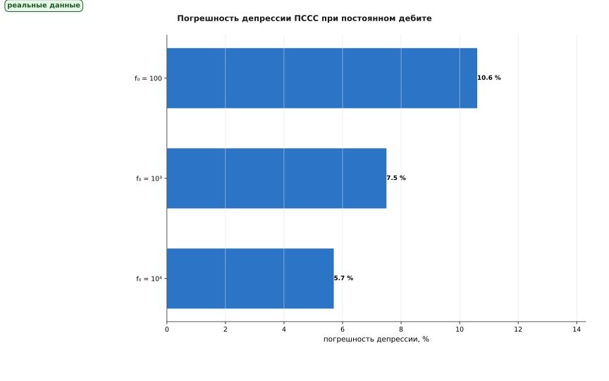

Погрешность депрессии на скважине по ПССС убывает с ростом безразмерного времени f₀ = κt/rс².
Автор даёт три контрольные точки: 10,6% при f₀ = 100, 7,5% при 10³ и 5,7% при 10⁴.
Чем дольше работает скважина, тем надёжнее оценка ПССС.
Пороговая идея. Связать оценку ошибки с безразмерным временем и с измеряемым выходом. модель
Как это работает
Как получена оценка
Автор сравнивает депрессию по приближённой формуле (24.16) с точной формулой (23.52). Из этого сравнения он делает вывод о точности метода. стр. 499
«Сравнивая (24.16) с депрессией, определенной по точной формуле (23.52)»
Главный вывод
Относительная погрешность расчёта депрессии уменьшается с течением времени. Значит, ПССС хуже всего работает сразу после пуска скважины. стр. 499
«по точной формуле (23.52), можно убедиться, что относительная погрешность уменьшается с течением времени»
Безразмерное время
Время сравнивают в безразмерном виде. Безразмерное время f₀ = κt/rс²: пьезопроводность, умноженная на время и делённая на квадрат радиуса скважины. стр. 499
«по вычислениям, 10,6%, если $f_0 = \kappa t / r_c^2 = 100$»
Контрольные числа
По вычислениям автора погрешность составляет 10,6% при f₀ = 100. При f₀ = 10³ она равна 7,5%. При f₀ = 10⁴ она равна 5,7%. стр. 499
«по вычислениям, 10,6%, если $f_0 = \kappa t / r_c^2 = 100$»
«= 100$; 7,5%, если $f_0 = 10^3$»
«= 10^3$; 5,7%, если $f_0 = 10^4$.»

Числа автора: с ростом безразмерного времени ошибка ПССС для депрессии на скважине убывает.
Класс A · реальные данные · нарисовано кодом · стр. 499
Ограничение
Эти числа относятся к депрессии на скважине при постоянном дебите. Это не оценка ошибки для всего поля давления. стр. 499
По шагам
Как оценить точность ПССС для скважины
Рассчитайте безразмерное время f₀ = κt/rс². стр. 499
Сопоставьте депрессию по (24.16) с точной формулой (23.52). стр. 499
Отнесите ошибку к ближайшему контрольному значению f₀. стр. 499
Разбор примеров из книги по книге
Сравнение радиальной депрессии с точной формулой стр. 499
Условие. Приток к скважине с постоянным дебитом; контрольные значения f₀ — 100, 10^3 и 10^4.
Сопоставьте депрессии по формулам (24.16) и (23.52) для каждого значения безразмерного времени.
Отнесите относительное расхождение к соответствующему времени.
Итог. Автор сообщает соответственно 10,6%, 7,5% и 5,7%.
Решение на данных
Насколько верить депрессии по ПССС
Признаки
Безразмерное время f₀ = κt/rс² для нужного момента
Какая величина оценивается: депрессия на скважине при постоянном дебите
↓
Правило
Чем больше f₀, тем меньше погрешность: 10,6% при 100, 7,5% при 10³, 5,7% при 10⁴. стр. 499
↓
Вывод
Специалист оценивает точность по f₀ и осторожнее относится к расчёту сразу после пуска.
Потренируйтесь
Дано: Безразмерное время f₀ = 100. (Разобранный пример, стр. 499)
Автор сообщает 10,6% при f₀ = 100.
Дано: Безразмерное время f₀ = 10⁴. (Разобранный пример, стр. 499)
Автор сообщает 5,7% при f₀ = 10⁴.
Дано: Сравните моменты f₀ = 10³ и f₀ = 100. (Разобранный пример, стр. 499)
Погрешность убывает со временем: 7,5% против 10,6%.
Цифры и условия
При f₀ = 100 погрешность депрессии — 10,6%. стр. 499
При f₀ = 10³ погрешность депрессии — 7,5%. стр. 499
При f₀ = 10⁴ погрешность депрессии — 5,7%. стр. 499
Формулы по книге
$$f_0 = \kappa t / r_c^2$$
Безразмерное время радиального расчёта. стр. 499
Обозначения
Обозначение
Что это
Единицы
$f_0$
безразмерное время
безразмерная
$\kappa$
коэффициент пьезопроводности
м²/с
$t$
время с начала отбора; dt — его малое приращение
с
$r_c$
радиус скважины
м
Что это значит для данных модель
Для расчёта «Как меняется погрешность радиальной депрессии со временем» отделите исходные параметры от модельных выходов.
Вход
Время, пьезопроводность, радиус скважины, приближённая и точная депрессия.
Выход
Контрольные значения относительной погрешности.
Где ломается
В источнике значения приведены для депрессии в постановке постоянного дебита; это не оценки ошибки всего поля давления.
Где здесь ручной труд специалиста
Входные данные
Время, пьезопроводность, радиус скважины, приближённая и точная депрессия.
Ручные шаги
Рассчитайте безразмерное время по κt/r_c².; Сопоставьте приближённую и точную формулы депрессии.; Отнесите сообщённую ошибку к соответствующему контрольному времени.
Точки суждения
Проверить, что критерий качества совпадает с нужным выходом модели.
Время
Время не оценено в источнике.
Типичные ошибки
Перенести процент погрешности на дебит или на другой режим отбора.
Аналогия модель
Как контрольная таблица ошибок для нескольких точек параметра тестирования.
Где аналогия перестаёт работать: Это детерминированное сравнение с точной формулой, не статистический доверительный интервал.
Как это делается сейчас модель
Сопоставляйте режимы по безразмерному, а не только календарному времени.
Новые понятия
безразмерное время
Время, умноженное на пьезопроводность и поделённое на квадрат радиуса скважины. стр. 499
пьезопроводность
Коэффициент, задающий масштаб распространения изменения давления в данной модели. стр. 499
депрессия
Разность начального давления в пласте и давления на выработке. стр. 499
дебит
Объём жидкости, отбираемый за единицу времени. стр. 499
ПССС
Метод последовательной смены стационарных состояний: в каждый момент в затронутой зоне принимают стационарный профиль давления. стр. 499
Все утверждения шага с дословной цитатой автора и страницей книги (по PDF).
Вывод о точности получен сравнением депрессий по формулам (24.16) и (23.52). наблюдение
«Сравнивая (24.16) с депрессией, определенной по точной формуле (23.52)»
Относительная погрешность депрессии убывает со временем. наблюдение
«по точной формуле (23.52), можно убедиться, что относительная погрешность уменьшается с течением времени»
Безразмерное время — произведение пьезопроводности и времени, делённое на квадрат радиуса скважины. наблюдение
«по вычислениям, 10,6%, если $f_0 = \kappa t / r_c^2 = 100$»
При безразмерном времени 100 погрешность составляет 10,6%. наблюдение
«по вычислениям, 10,6%, если $f_0 = \kappa t / r_c^2 = 100$»
При безразмерном времени 10^3 погрешность составляет 7,5%. наблюдение
«= 100$; 7,5%, если $f_0 = 10^3$»
При безразмерном времени 10^4 погрешность составляет 5,7%. наблюдение
«= 10^3$; 5,7%, если $f_0 = 10^4$.»
Исходный текст урока
Стр. 499 · §1. Метод последовательной смены стационарных состояний
Сравнивая (24.16) с депрессией, определенной по точной формуле (23.52), можно убедиться, что относительная погрешность уменьшается с течением времени и составляет, по вычислениям, 10,6%, если $f_0 = \kappa t / r_c^2 = 100$; 7,5%, если $f_0 = 10^3$; 5,7%, если $f_0 = 10^4$.